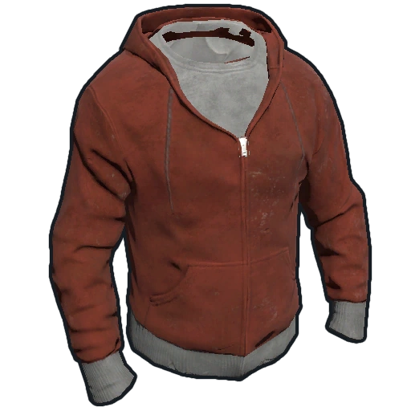
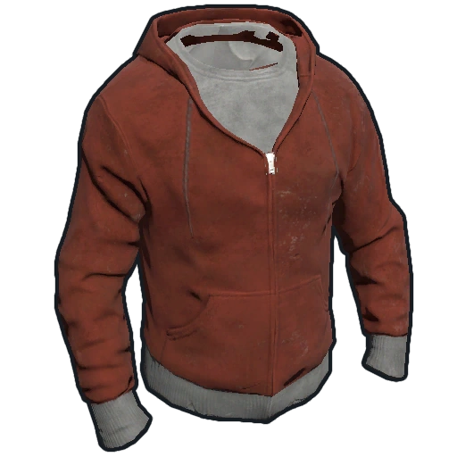
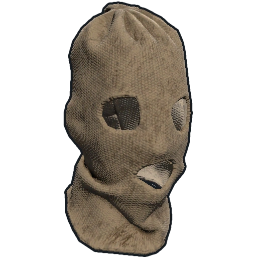
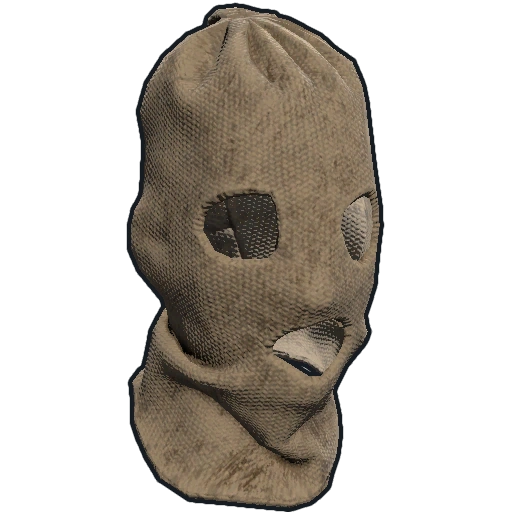
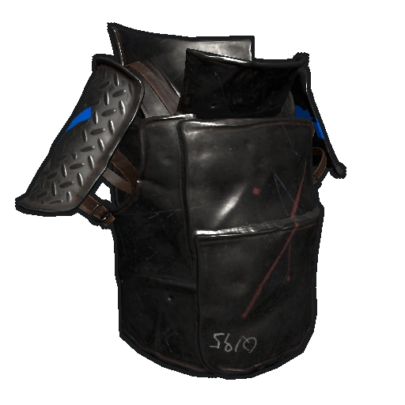
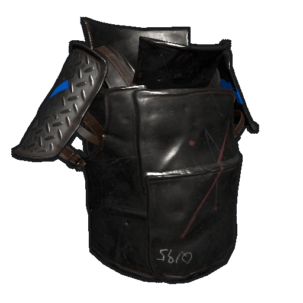

Ropa y equipación en Rust
Fases de la partida
En Rust no hay un solo set perfecto. La ropa cambia según el momento de la partida: inicio, mitad y final. Aquí tienes un resumen sencillo.
Early game
Nada más aparecer, la prioridad es no morir de dos flechas. Usa cosas baratas pero que te den algo de defensa.
- Gorro de hueso
- Camisa y pantalones de saco
- Armadura de madera (pechera y piernas)
- Zapatos sencillos


Buena opción para farmeo inicial y peleas con arco.
Mid game
Cuando ya tienes metal y mesa de trabajo, empiezas a usar piezas de señales de tráfico y cascos más fuertes.
- Roadsign vest
- Roadsign kilt
- Coffee can helmet o metal facemask
- Guantes y botas


Ideal para ir a monumentos y hacer roaming.
Late game
En esta fase ya se usa metal pesado y equipación completa para raideos y PvP serio.
- Metal facemask
- Metal chestplate
- Roadsign kilt
- Guantes tácticos y botas militares


Set típico para raids y peleas grandes entre clanes.
Sets para PvP
Dependiendo de cómo quieras pelear, puedes elegir un set más agresivo, más sigiloso o más resistente.
Roaming agresivo
- Metal facemask
- Roadsign vest + kilt
- Hoodie + pantalones
- Guantes tácticos y botas
 

Buen equilibrio entre vida y movilidad. Perfecto para buscar PvP.
Sniper / sigilo
- Poncho oscuro o camuflaje
- Balaclava
- Guantes
- Zapatos silenciosos o descalzo

 


Para esconderte y disparar desde lejos sin que te vean.
Defensa y raid
- Metal facemask
- Metal chestplate
- Roadsign kilt
- Guantes tácticos
Pensado para aguantar explosivos y aguantar en puertas y muros.
Clima y entorno
La ropa también sirve para protegerte del frío, calor y radiación.
Radiación
Para monumentos grandes y Oil Rig lo normal es usar traje de radiación.
- Traje de radiación completo
- Mochila pequeña opcional


No te protege de balas, solo de rad.
Nieve y frío
El frío quita mucha vida si no vas bien abrigado.
- Wolf headdress
- Snow jacket o hide poncho
- Botas de piel
- Guantes


Ahorras comida y te curas menos veces.
Desierto y calor
En el desierto usa ropa ligera. No abuses del metal pesado.
- Camisetas y pantalones simples
- Zapatos ligeros
- Evitar heavy plate
 

Te mueves más rápido y sufres menos calor.
Resumen
Al principio usa cosas baratas, en la mitad usa señales de tráfico y mejores cascos, y al final puedes ir con metal completo. Cambiar de set según la situación hace que mueras menos.